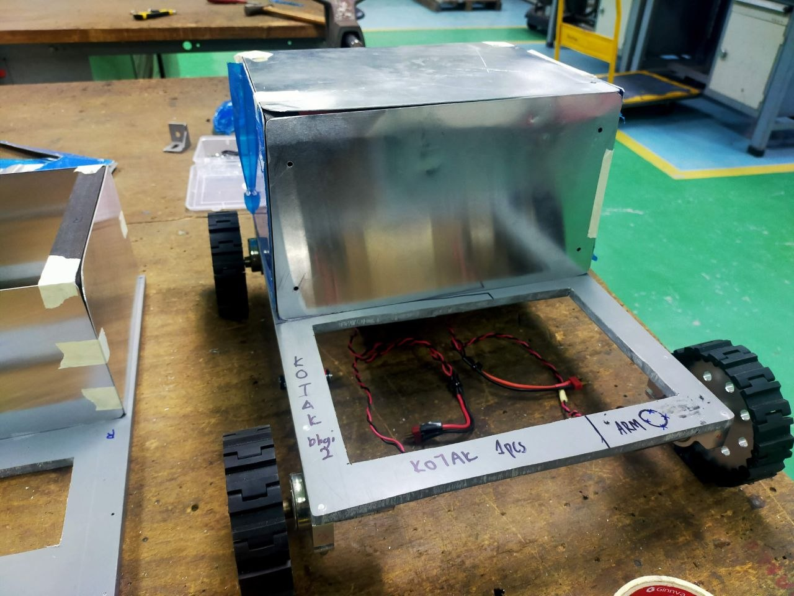
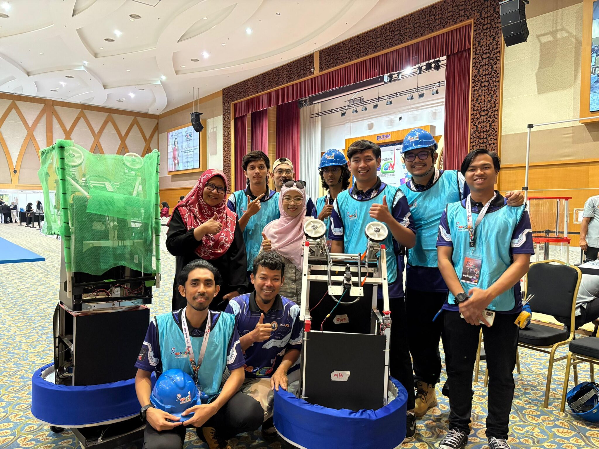
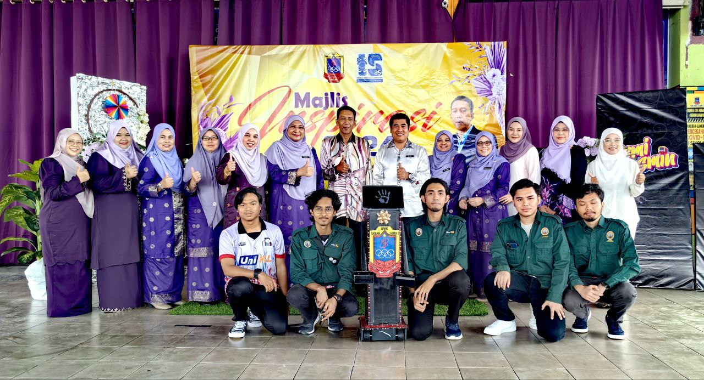
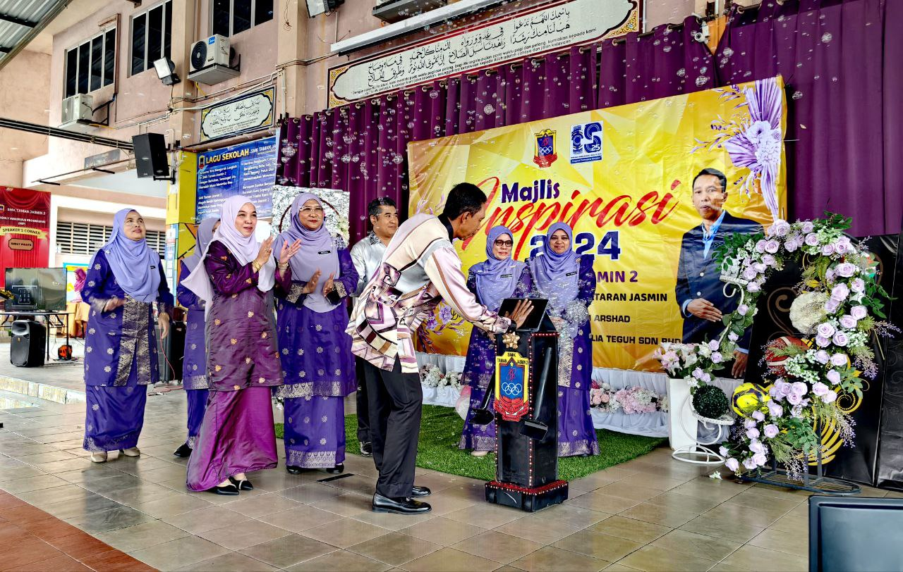

Seeking Internship Automation/ Machatronics / Robotics / Software Engineer
AMEER AIZAD REZUAN
Final-year Automation and Robotics Engineering Technology student seeking a 6-month internship from 12 October 2026 to 26 March 2027.
Automation & Robotics
Software Development
IoT Systems
PLC Programming
AI Learner

Internship Focus
Ready to contribute to engineering projects involving automation, machine systems, data, and real-time monitoring.
CGPA 3.56
Own Transport
Willing Travel
Selangor
About
Final-year automation and robotics student looking for industry experience.
I am currently pursuing a Bachelor of Engineering Technology in Automation and Robotics with Honours at Universiti Kuala Lumpur Malaysia France Institute. My background combines PLC, IoT, robotics, software development, and data-driven engineering projects.
I enjoy building practical systems, learning new technologies, and working with teams to solve engineering challenges under pressure. I am looking for an internship where I can contribute, learn from experienced engineers, and strengthen my technical and professional skills.
Skills
Technical strengths
Electrical Design
Software & CAD
Programming
Databases
Projects
Selected work
IoT Project
Monitoring dashboard projects for machine performance and sensor data.
See moreRobotics Project
Robot development and competition projects including Robattle 8kg, IRO, Sumo, Robocon Malaysia, and Robot Gimmick.
See moreIndustrial Automation Exposure
Hands-on exposure with machine systems, troubleshooting, MMS 4.0, FANUC robots, and Dadih Maker Machine development.
See moreProject Details
Project gallery
01
IoT Project
IoT-Based OEE Monitoring Dashboard for Labelling Machine
This project was built to help users monitor an automated labelling machine more clearly in real time. I developed a dashboard system that reads PLC and sensor data, calculates OEE values, and displays machine performance through a WPF interface so production activity, downtime, and quality issues are easier to understand.
Connected PLC I/O signals, sensors, Node-RED, SQLite, and a WPF dashboard into one monitoring flow. Shows production cycles, downtime, reject records, and machine performance in a clearer way. Project collaboration involved Solo Labeller Technology Sdn. Bhd. and Move Robotic Sdn. Bhd.


IoT Mini Project — Smart Indoor Environmental Monitoring System
This project provides an automated solution for maintaining safe and optimal environmental conditions within industrial workshops and indoor spaces. By deploying a combination of microcontroller units and industrial PLCs across multiple monitoring zones, the system continuously tracks key ambient factors such as temperature, humidity, and air quality.
Designed to operate without requiring manual oversight, the system features automated control logic that instantly activates localized corrective actions—such as cooling fans or visual hazard alerts—whenever environmental parameters breach predefined safety thresholds. Sensor data is transmitted through a lightweight messaging protocol to a central server for real-time dashboard visualization, while a backend database records long-term historical data to support ongoing workplace safety analysis and operational trends.


02
Robotics Project
Robattle 8kg — Combat Robot Competition
This robot competition is organized to inspire greater interest in STEM, particularly in the field of robotics, among the community, especially young people. The event brings together participants from various higher education institutions and skills training institutes, providing a platform to showcase talent, creativity, and technical expertise.
The competition challenges each team to apply their knowledge of wireless technology, robot control systems, and robotic design to build and operate an 8kg combat robot. Through this hands-on experience, participants are encouraged to develop innovative solutions, enhance their problem-solving skills, and demonstrate creativity in designing robots capable of competing in a dynamic and exciting environment.


International Robot Olympiad (IRO)
The International Robot Olympiad is a global competition where students collaborate to find solutions through AI-driven robotics. Participants are challenged to design, build, and program intelligent robots capable of solving complex, real-world problems. The Olympiad combines AI, robotics, and STEM principles (Science, Technology, Engineering, and Math) with creativity and problem-solving skills.
Teams are evaluated based on innovation, technical skill, and their robots’ ability to make autonomous decisions, showcasing the potential of AI to transform various fields.
.jpeg)



Robot Sumo
Robot sumo is a competitive engineering sport where two custom-built robots face off in a circular ring, known as a dohyō. The objective is to use sensors, clever programming, and mechanical design to push the opposing robot out of the ring while avoiding falling out yourself.


Robocon Malaysia 2025
Robocon Malaysia is the national-level collegiate robotics competition. University and polytechnic students design, build, and operate advanced robots to complete specific, highly technical tasks. The winning team represents Malaysia at the annual international ABU Asia-Pacific Robot Contest (ABU Robocon).

.jpeg)
Robot Gimmick — School Programme Launch
The robot gimmick is designed to create an exciting and memorable opening for the school programme launch. As the special guest activates the robot, it performs a symbolic action to officially launch the programme, representing innovation, creativity, and the school’s commitment to embracing future technologies.
This interactive presentation not only captures the audience’s attention but also inspires students to explore the world of science, technology, engineering, and robotics.


03
Industrial Automation Exposure
Machine Maintenance & Troubleshooting
Hands-on experience maintaining and troubleshooting industrial machine systems, including MMS 4.0 systems, PLC-based mechatronics training modules, and automated production equipment. Performed diagnostic procedures, identified faults in electrical and mechanical subsystems, and carried out corrective maintenance to restore machine functionality and minimise downtime in a real industrial environment.


FANUC Robot Exposure
Practical exposure to FANUC industrial robots during placement at MIT Academy Sdn Bhd. Involved robot operation, basic programming, system observation, and understanding of robotic automation workflows used in modern manufacturing environments. This experience provided valuable insight into how robotic arms are integrated into production lines for tasks such as material handling, assembly, and quality inspection.

.jpeg)

Develop Dadih Maker Machine
Involved in the development of a specialised Dadih (traditional yogurt) maker machine, combining mechanical design, electrical wiring, and control system integration. The project required understanding the batch production process, designing the machine layout, selecting appropriate heating and control components, and programming the logic for automated temperature regulation and process timing to ensure consistent product quality.


Experience
System Integration - Final Year Project
Developed an IoT-based OEE dashboard to improve Labelling Machine performance visibility and support data-driven decision making in a teaching factory environment, in collaboration with Solo Labeller Sdn Bhd and Move Robotic Sdn Bhd.
Engineer Trainee, Contract Extension - MIT Academy Sdn Bhd
Supported technical operations, system maintenance, and troubleshooting tasks after completing internship placement.
Engineer Trainee, Internship - MIT Academy Sdn Bhd
Maintained the Learning Management System, assisted with industrial machine maintenance and modification, and gained exposure to MMS 4.0 systems and FANUC robots.
Education
Universiti Kuala Lumpur Malaysia France Institute
Bachelor of Engineering Technology in Automation and Robotics with Honours. Current CGPA: 3.56.
Mara Higher Skills College Kuantan
Diploma in Mechatronics Engineering.
Contact